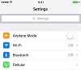
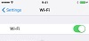
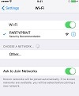
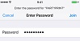
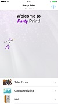
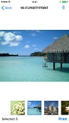
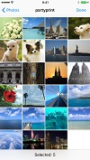

Party Print Help
Connecting Devices
Connecting Your Device
Sending Images
Taking New Pictures
Choosing Existing Pictures
Common Transfer Issues
Reprinting an Image
Connecting Devices
Connecting Your Device
- If necessary, ask your event planner for the name of the PartyPrint wireless network and the network password.
- Connect to the PartyPrint wireless network.
- On your device, go to Settings.
- Select the Wi-Fi option.

- Verify that the Wi-Fi connection is set to ON.

- Locate the PartyPrint network name and select it. If the network is not password protected then you are now joined to the network.

- If the network is pasword protected, enter the PartyPrint Wi-Fi password and select Join to connect to the network. (See the event planner for the password.)

- Open the PartyPrint application on your device.
- When you see the application screen you are connected to the server.

Connecting to the Wi-Fi network:
- On your device, go to Settings.
- Select the Wi-Fi option.
- Verify that the Wi-Fi connection is set to ON.
- Locate the PartyPrint network name and select it. If the network is not password protected then you are now joined to the network.
- If the network is pasword protected, enter the PartyPrint Wi-Fi password and select Join to connect to the network. (See the event planner for the password.)
- Open the PartyPrint application on your device.
- When you see the application screen you are connected to the server.
Connection error message:
A message stating "The application cannot connect to the server. Please connect to the Wi-Fi network for this event" means the application is not communcating with the wireless network and/or server. The application must be connected to the PartyPrint wireless network in order to send the images to the server. Press the Retry button on the main PartyPrint screen to attempt to connect again.
Sending Images
Taking New Pictures
Once you have connected to the PartyPrint network, you can send over new pictures you take within the PartyPrint application.
- Open the PartyPrint application on your device.
- From the main screen, select the Take Photo button. You can now take a picture using your device's camera. Use your camera menus and settings enhance your images. (Touch the Cancel button to return to the main PartyPrint screen.)
- After the picture is taken, press the Use button to continue. Press the Retake button to return to the camera and take another picture.
- At the review screen, you can remove any images you selected by accident by touching the X next to the image.

- Press the Print button to print your images, or press the Back button to return to the main PartyPrint screen.
Choosing Existing Pictures
Depending on the settings your event planner has used, you can also send existing pictures to the PartyPrint server for printing.
- Open the PartyPrint application on your device.
- From the main screen, select the Choose Existing button.
- When your camera album menu appears, select the album you want to use. Scroll through the album and select the image you want to print.
(Depending on the settings, you may be able to print multiple images at a time. A message appears letting you know if you select too many images.)

- When you are ready to continue, select the Done button.
- At the review screen, you can remove any images you selected by accident by touching the X next to the image.
- Press the Print button to print your images, or press the Back button to return to the main PartyPrint screen.
Common Transfer Issues
Slow transfer speeds:
Slow transfers can occur when many people are using the wireless network at the same time. After you submitted your images, the transfer happens as soon as the system allows. Also, if you are submitting multiple images at the same time, then delays can occur.
Network/Server connection errors:
For information on network and server connection error messages see "Connection error messages." For information on how to connect to the Wi-Fi network, see "Connecting to the Wi-Fi network."
Error while printing:
An error while printing can mean that the wireless network is busy. Press the Print button again to sent your prints again.
Existing images do not print:
If images taken before this event will not print, then the event planner has disabled this functionality for this event.
Reprinting an Image
Want another print of an image? Love that last picture and want a copy for Mom? To make another print, select Choose Existing from the main PartyPrint menu, just select the same image and press Print. Soon another print will be ready for you! For more information, see "Using Existing Pictures."